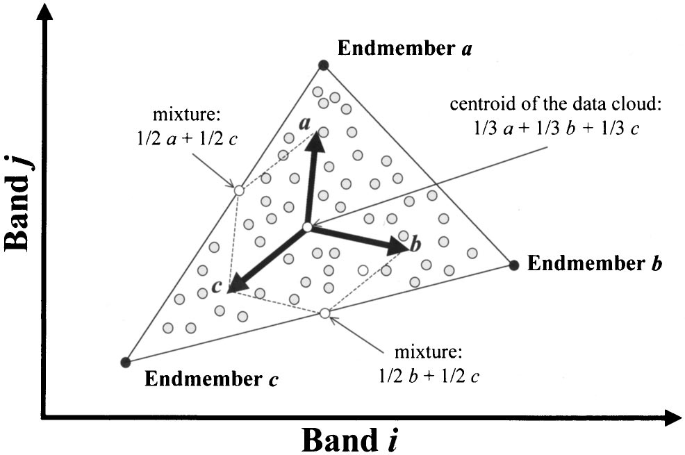
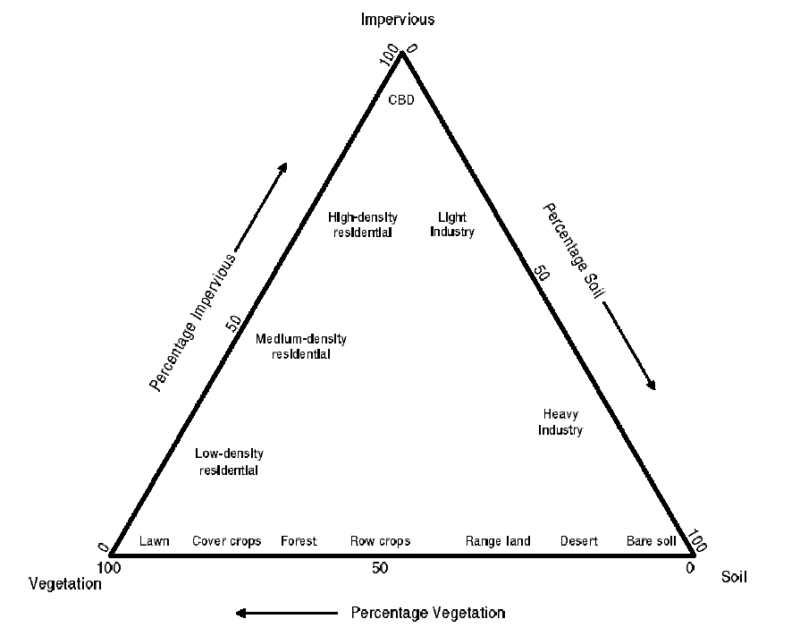
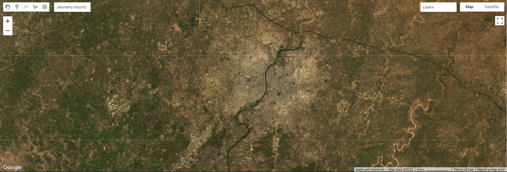
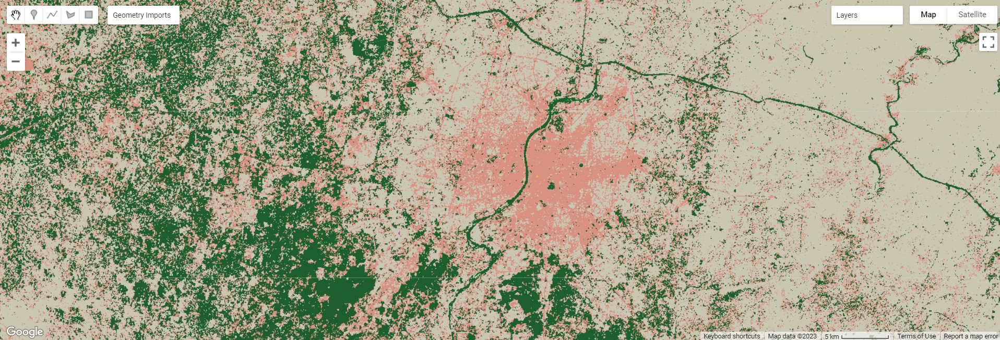
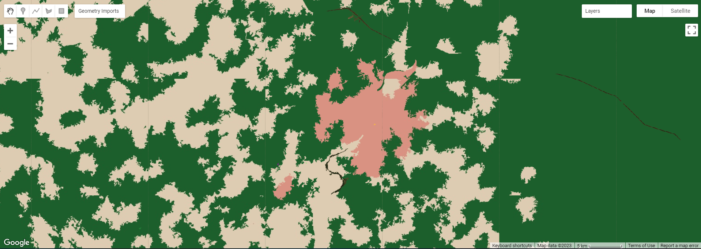

7 Week 7: Classification 2
7.1 Learning Objectives
Advanced Classification Methods (sub-pixel and super pixel)
Assessing accuracy (and accounting for spatial dependence)
7.2 Summary of Key Concepts
This week’s lecture covered more classification methods and how to assess accuracy of classifers, as well as the importance of accounting for spatial dependence in classifiers. This learning diary will focus on the advanced classification methods covered, while briefly summarising the other content in point-form.
7.2.1 Landcover classification methods
7.2.1.1 Object-based image analysis (OBIA)
Superpixels: consider shapes (rather than cells) based on the homogeneity or heterogeneity of cells
Simple Linear Iterative Clustering (SLIC) Algorithm is the most common method for superpixel generation
Parameters: distance (closeness to centre of pixel) and homogeneity of colours
Process:
Requires several iterations for tuning and improving accuracy
Values can change and borders can move.
7.2.1.2 Sub-pixel analysis/ sub-pixel classification/ spectral mixture analysis/ linear spectral unmixing
This method estimates the proportion/ fractions of landcover that make up a pixel
This process is dependent on a few endmembers that are spectrally pure that can come from:
Spectral library
From image
labwork
Sub pixel analysis matrices: GEE makes it unconstrained by default, but constrain by setting sum to 1

Scatterplot of two-dimensional spectral data illustrating the physical interpretation of a mixture model based on endmembers Source: (Plaza et al. 2002)
Makes a map of fractions
Some considerations for this approach include:
Number of endmembers:
This could be simplified using the Vegetation–Impervious Surface- Soil model

VIS model of Ridd (1995) Source: (Phinn et al. 2002)
Or use Multiple Endmember Spectral Mixture Analysis (MESMA) (Fernández-García et al. 2021)
7.2.2 Accuracy
In remote sensing, there are 3 main types of accuracy we focus on (Barsi et al. 2018)
Producer accuracy (PA)
- \[ TP/ (TP + FN) \]
User Accuracy (UA)
- \[ TP/ (TP + FP) \]
Overall Accuracy (OA)
- \[ (TP + TN) / (TP+FP+FN+TN) \]
These are represented in a binary confusion matrix illustrating True Postive, True Negative (model is correct) and False Positive, False Negative (model is incorrect).
7.2.3 Beyond remote sensing and into machine learning
Combine into F1 score (Both PA and UA)
F1 doesnt consider true negatives
but this depends on threshold
Receiver Operating Characteristic Curve
- Calculate area under curve
Cross-validation
Spatial auto-correlation: ideally use spatial cross-validation
7.2.4 Spatial Cross-Validation
Spatially partition the folded data
Distance threshold (GEE)
Disjoint (no common boundary) using k-means clustering
Support Vector Machine
Rather than using each fold to figure out C and gamma (overfits), take random sample from fold then get C and gamma (Lovelace, Nowosad, and Muenchow 2019).
Not available in GEE yet but available in R
GEE specific to satellite imagery, hard to do vector analysis and stuff
7.3 Summary of Practical Content
For this week’s practical, we looked at using sub-pixels and super-pixels for classification. For super-pixels, the main outline was to take a grid of points and get the pixels, then reduce the pixels to fewer objects and finally classify the objects.
First we cluster the pixels:
K-means clustering
- ee.Algorithms.Image.Segmentation.KMeans()
or Simple Non-Iterative Clustering (SNIC)
Clusters pixels using normalised spatial and colour distances
Make a seed grid first: ee.Algorithms.Image.Segmenttion.seedGrid()
To run SNIC: ee.Algorithms.Image.Segmentation.SNIC()
Extract more information (e.g. NDVI) then create an image
- ee.Image.cat()
Then use a CART classifier for landcover classification
- ee.Classifier.smileCart().train()
For this practical, I used Ahmedabad, India, which is also the city me and my group used for our group presentation.



Landcover Classification for Ahmedabad
My practical output gave very interesting results. My inputs were urban, grass, bare earth and forest areas, and there are only 3 typologies for the output. The pink areas are urban, grey bare earth and green seems to be a mix of forest and grass areas. Perhaps my input pixels were not distinct enough and human error resulted in this. For the super-pixel approach, it also seems to have not classified the river (black lines which are actually slivers when zoomed in, while the sub-pixel approach classified the river as grass/forest. If I were to repeat this, I would use endmembers from a spectral library rather than my own extracts. The superpixel output is more aesthetic compared to the sub-pixel at first glance too.
7.4 Application of Key Concepts and Skills
However, one challenge for landcover classification is that of urban areas. Identifying and delineating urban areas is still a challenge because of the difficulty of disentangling surface reflectance of pixels due to the varied types of surface materials and structures in urban areas (Herold, Gardner, and Roberts 2003; Varshney and Rajesh 2014; MacLachlan et al. 2017). Spatial resolution is thus an important factor for accurate monitoring of LULC change.
Accurate estimation of urban areas is also important as it is also used in other applications such as climate models or investigating urban heat island effects. What I found interesting in Andy’s article (2017) is how remote sensing methods are still developing and improving. In his article, he compares the use of Support Vector Machine (SVM) spectral unmixing and the novel sub and hard pixel Import Vector Machine (IVM) classifier. The IVM approach assess whether new samples (import vectors) can be removed in each forward step to provide a smoother decision boundary, and generates 2 outputs: a subpixel dataset that gives the probability of a pixel containing a given landcover type and a ‘hardened’ classified dataset. Andy argues that classified subpixel data alongside high spatial resolution imagery can refine estimates of urban areas, facilitating improved decision-making that maximises financial resources. Nonetheless, it is also important to be conscious of how spatial structure and composition of urban and suburban areas differ regionally, nationally and globally (MacLachlan et al. 2017).
As remote sensing researchers, we should remain up to date with the latest classifier methods and understand how they work so as to use satellite imagery most effectively.
7.5 Reflections
This week’s content was quite technical, covering both advanced classifier methods and indicators for accuracy assessment (although I’ve learnt the concept of confusion matrix in accuracy assessment before in a module using machine learning). Nonetheless, it was exciting to try out landcover classification on GEE in the practical. While there was much room for improvement, I am excited to experiment with different methods in the future and understand how to optimally classify landcover.
However, one slight concern I have is how technical remote sensing jargon can get in academic articles, but I think the only way is to slowly read more and be exposed to different methodologies.